前言
那是一个很久之前的故事了。。。之前我一直认为CSS最重要的是布局，将一个图片很好的以网页显示出来就是王道。
但是，经过后来慢慢入门后，才发现其实布局感觉不是很难了，倒是行内元素这个家伙深藏不露。
行内元素属于那种很仁慈的主，你了解他你能做得更好，你不了解他，你的页面也不会过于乱，所以我们就容易忽略他的威力，所以今天我们一起来好好的审视一番吧
那一年，你未娶我未嫁
在那一年我会写这样的代码：
<p> 霹雳布袋戏中最广为人知的主角之一。叶小钗一生悲情，命运多舛，亲人恩人朋友一个个离他而去，遭遇令人心酸，却也因此练就了超绝的禅定功夫。 耿直专一、守信重诺的侠客，虽为侍童出身，但不屈不挠的个性，丰富的人生阅历，让其成为中原武林不可或缺的一员， 享有<span style=" width: 200px; height: 200px; margin: 10px; padding: 10px; border: 1px solid black;">「刀狂剑痴」</span> 之盛名，披肩的白发和脸上的英雄疤，搭配沉默无言的特色，营造出该角色独特的风范。</p>
然后，我再做了一点demo，就以为掌握到了精华：
1 设置width无效
2 设置height无效
3 margin上下无效，左右有效
4 padding上下无效，左右有效（元素范围增大，但是元素内容无效）
以上便是我很长一段时间对行内元素的理解，只是流于表面，而且一段时间也没有什么问题的。
后来一点，各方面有所成长，我发现其实自己是忽略了一些东西的。
奇怪的现象
在上面我们发现设置高度和宽度是没有意义的，特别是高度又让我们变得更加疑惑了，请看例子：
1 <div>我在之前</div> 2 <div style=" border: 1px solid black; background-color: Red; ">空格</div> 3 <div>我在之和</div>
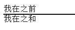
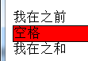
以上是div中有字和div中没字时候的差别，我们发现div若是没字的话，他就“消失了”。
有了文字后，div就有高度了，所以我们认为是文字撑开了div，但是根据我们之前对行内元素的理解后，我们会慢慢怀疑不是文字撑开了高度而是line-height：
1 <div>我在之前</div> 2 <div style=" border: 1px solid black; background-color: Red; line-height: 1px; ">空格</div> 3 <div>我在之和</div>
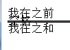
对于这张图其实我们是应该感到诧异的，因为他狠狠的给了我一巴掌（真是有图有真相啊）。
他基本就说明了，文字其实并没有撑开div，控制div高度的是line-height，但是为什么没有文字时候他就没有高度呢？
在inline box 模型中，有个line boxes，他就是文字的框（CSS里面神马东西都会有框），一行文字有一个line boxes，上面的“空格”就有一个line boxes（每个文字又会有自己的行内框inline box，这两爷们取名过于相似，容易误解），div空着的时候里面没有line boxes，但是有字后，这家伙就有line boxes了，所以他就很嚣张的“膨胀”了起来。
以上的line boxes还不是最终boss，最终boss其实是里面的行内元素，因为事实上是行内元素的inline boxes形成的行高，来一个走：
1 <div>我在之前</div> 2 <div style=" border: 1px solid black; background-color: Red; line-height: 1px; "> 3 <img src="1.png" />空格</div> 4 <div>我在之和</div>
看着我们伟大的图片，撑开了我们的div！
PS：其实我这里不该引入图片的，他会把情况变得更加复杂，比如你给图片设置行高什么的，你会发现。。。所以，我们重新来个例子：
1 <div>我在之前</div> 2 <div style=" border: 1px solid black; background-color: Red; line-height: 1px; "> 3 <span style=" ">叶小钗</span>空格</div> 4 <div>我在之和</div>
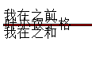
1 <div>我在之前</div> 2 <div style=" border: 1px solid black; background-color: Red; line-height: 1px; "> 3 <span style="line-height: 10px; ">叶小钗</span>空格</div> 4 <div>我在之和</div>
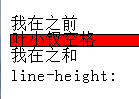
我们可以看到，无论图片或者后面的span，“叶小钗”将一条街的高度都拉高啦！！！
这是为什么呢？？
因为行内元素“叶小钗”的inline boxes 将整个line boxes拉高了（其实叶小钗是3个inline boxes了。。。）
在这个情况下，我们再来看看文字居中的实现：
1 <div>我在之前</div> 2 <div style=" border: 1px solid black; background-color: Red; line-height: 40px; "> 3 叶小钗</div> 4 <div>我在之和</div>
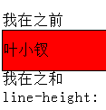
我们发现，这里并没有把height与line-height设置为一样，但是他还是居中了，其实是因为没有设置height的时候line-height就是他的height了，所以height有时候还是需要的。
至此，我想我们队行内元素的认识应该更加深刻了吧。。。。于是我们再拓宽一下吧。
float与行内元素
float是个坏家伙，我们之前就说过，inline boxes让line boxes拥有了高度，所以我们整个元素就有了高度，但是我们来看一下情况：
1 <div>我在之前</div> 2 <div style=" border: 1px solid black; background-color: Red; line-height: 2px; "> 3 <span style="line-height: 10px; ">叶小钗</span>空格</div> 4 <div>我在之和</div>
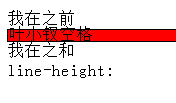
这张图没问题，“叶小钗”拉高了整个line boxes的高度，但是我们若是给他加上浮动呢？
1 <div>我在之前</div> 2 <div style=" border: 1px solid black; background-color: Red; line-height: 2px; "> 3 <span style="line-height: 10px; float: left; ">叶小钗</span>空格</div> 4 <div>我在之和</div>
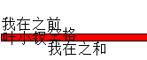
我们来看看float这个坏家伙干了些什么事情：
① 破坏了我“叶小钗”的高度，我连高度都没了，而且脱离了文档流（呜呜，救命）
② 虽然我没有了高度，却为何要给我宽度，所以后面的字在我之前
看吧，float这家伙够坏吧，所以我们布局不要用着家伙了，因为他让叶小钗没了高度！！！！
我们为原来的代码加点效果也许又会看到一点不同的东西：
1 <div>我在之前</div> 2 <div style=" border: 1px solid black; background-color: Red; line-height: 2px; "> 3 <span style=" float: left; background-color: Gray; ">叶小钗</span>空格</div> 4 <div>我在之和</div>
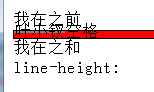
这是无比诡异的一幕！我们在学习行内元素时候为什么难，因为稍不注意就会颠覆我们的想法，稍不注意又会陷入疑惑！
我们明明破坏了叶小钗的高度，为什么他还会有那么一点背景呢？？？
我这里就斗胆认为div有一点点默认高度了，若是不对请大神指出。若是动态指定其高度，那么背景区域会更大一点，好了，我们马上来试试：
1 <div>我在之前</div> 2 <div style=" border: 1px solid black; background-color: Red; line-height: 2px; "> 3 <span style=" float: left; background-color: Gray; width: 50px; height: 50px; padding: 10px; margin: 10px; ">叶小钗</span>空格</div> 4 <div>我在之和</div>
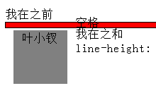
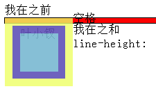
主意来！我们叶小钗外面的元素可是span哟，按道理说span设置height时无效的，但是这里明显他是有效的！！这又是为什么呢？这个和我们元素的框又产生关系了。
PS：事实上这里“float强迫行内元素变成了inline-block元素啦”。
float这家伙的做法便是：破坏之、重建之！
反正不管怎么说，float让行内元素变成了不是inline-block的inline-block元素。
行内元素与absolute
与float一致，absolute干的坏事不必他好，有过之而无不及啊！！！也是让元素脱离文档流。
绝对定位元素会将一个元素的width和height破坏的一干二净(不对请指出)。
若是说float是白蚁的话，absolute就是会飞的白蚁，其实我们这样认为不好！
absolute虽然会破坏重建一个元素，但是他本身就是用来布局的，会飞的inline-box就是对他最好的形容。反正我的意思就是大家要好好对待他了：
<div>我在之前</div> <div style=" border: 1px solid black; background-color: Red; line-height: 2px; "> <span style=" position: absolute; background-color: Gray; width: 50px; height: 50px; padding: 10px; margin: 10px; ">叶小钗</span>空格</div> <div>我在之和</div>
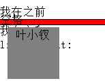
absolute就是会飞的inline-block。
行内元素与vertical-algin
vertical-align这个家伙是行内元素对齐的工具：
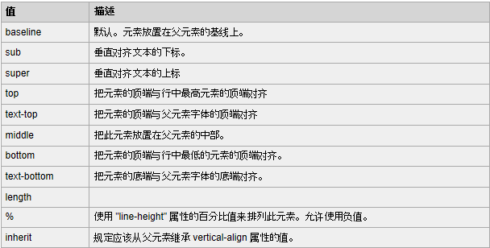
以上一坨东西，我这里就不管了，反正大家一定记得：
<input type="checkbox" style=" vertical-align: -2px;"/>
这段代码有什么用就好。
有时候我们会将vertical-align用于块级元素，这样是不起作用滴，他只能用于块级或者行内元素，而且会让一整块相对于基线做漂移。
我们这里这个可能用不到太深入，这边便不深究了。接下来我们以一个例子结束本文吧。
参考资料
独孤求败当年悟道独孤九剑花费10年光景，令狐冲1年不到就学会，这就是名师的威力啦，所以我们要多学习，多借鉴，甚至多模仿人家的思想，然后集合大家之长形成自己的理念甚至学说，过程如何不重要，重要的是不停的学习。该文参考(传说中的名师)：
http://www.cnblogs.com/winter-cn/
结语
中午不睡，下午崩溃！！！后面点时间我们还是一起研究bootstrap与CSS相关的东西。